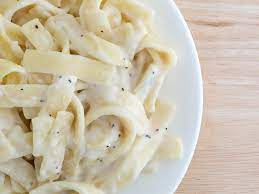

To Die For Futtuccine Alfredo
Site Map

Link to original recipe
Ingredients
- 24 oz dry fettuccine pasta
- 1 cup butter
- 3/4 pint heavy cream
- salt and pepper to taste
- 1 dash garlic salt
- 3/4 cup grated Romano cheese
- 1/2 cup grated Parmesan cheese
Directions
-
Bring a large pot of lightly salted water to boil. Add fettuccine and cook
for 8 to 10 minutes or until al dente; drain.
-
Melt butter into cream in a large saucepan over low heat; add salt, pepper,
and garlic salt. Increae the heat to medium; stir in grated Romano and Parmesan
cheese until melted and sauce has thickened.
-
Add cooked past to sauce and toss until thoroughly coated; serve immediately.